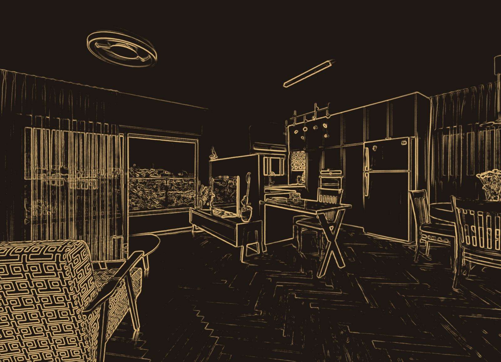
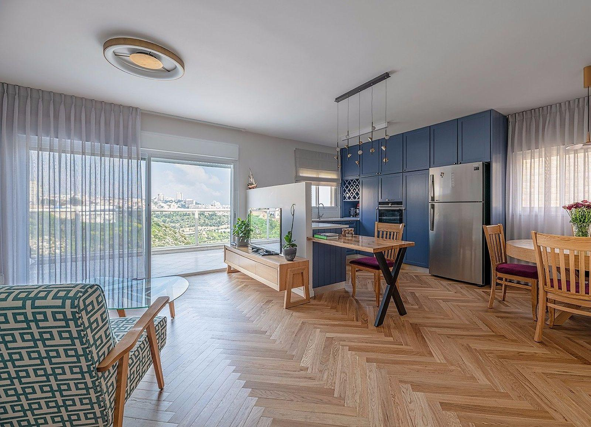
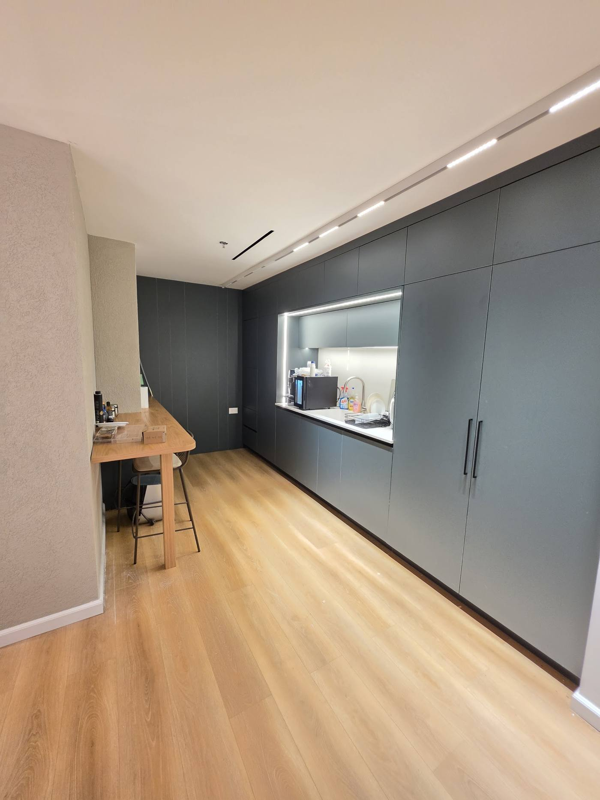
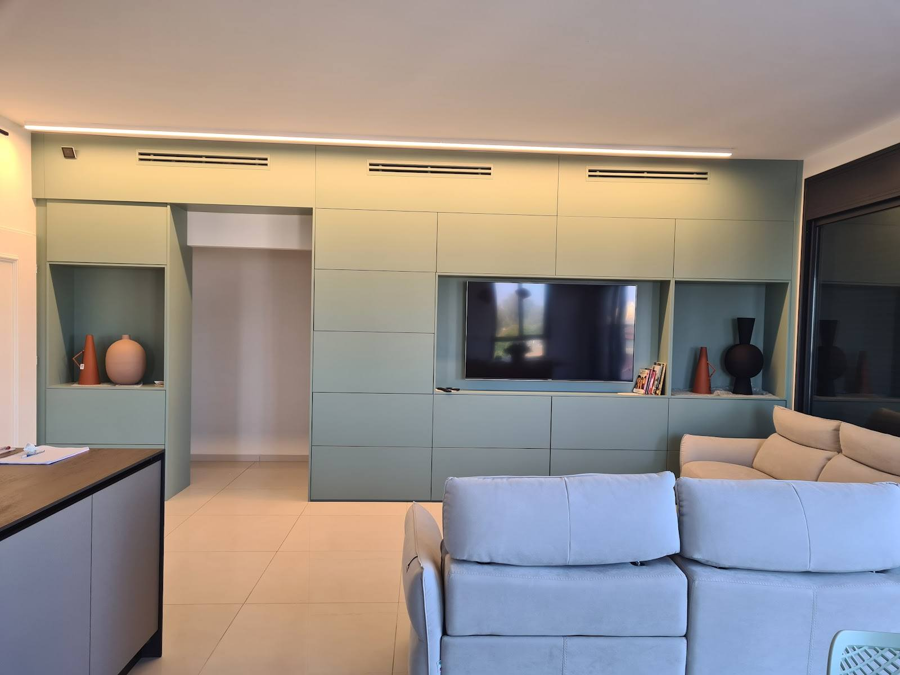
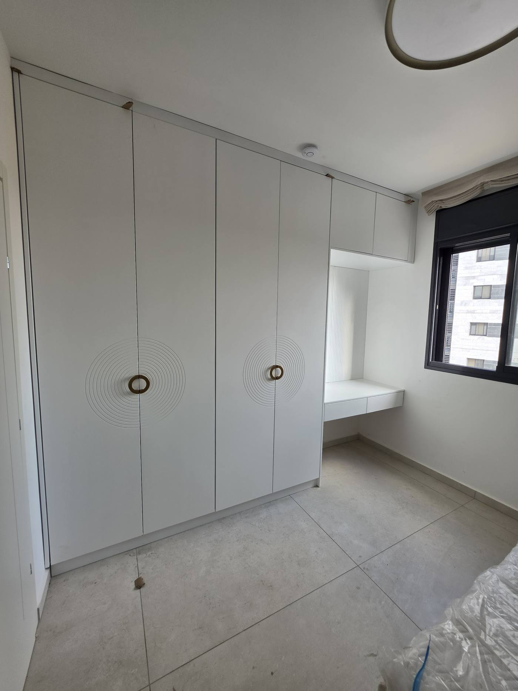
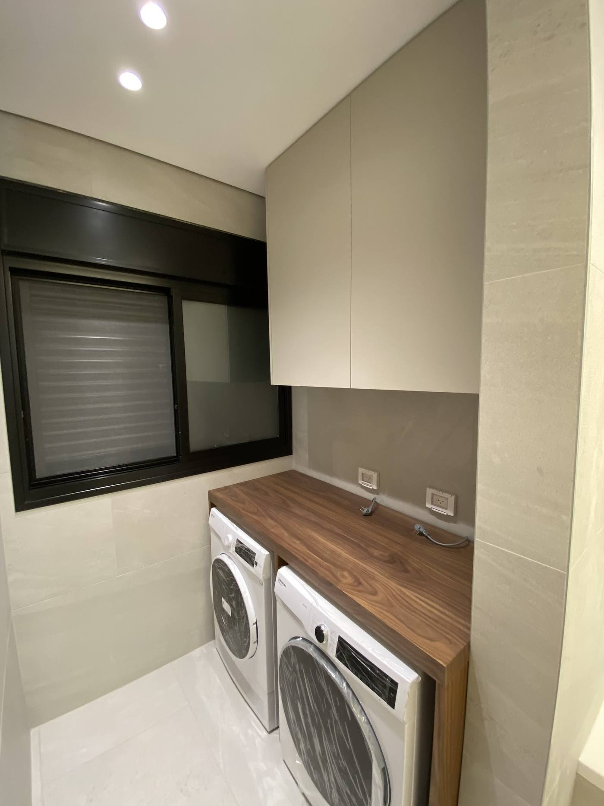
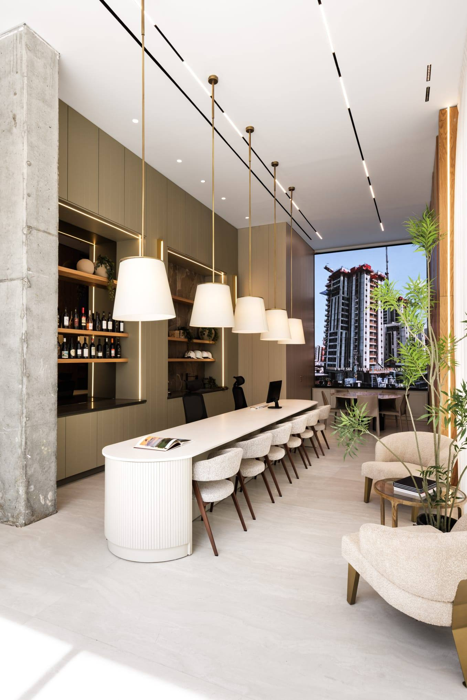
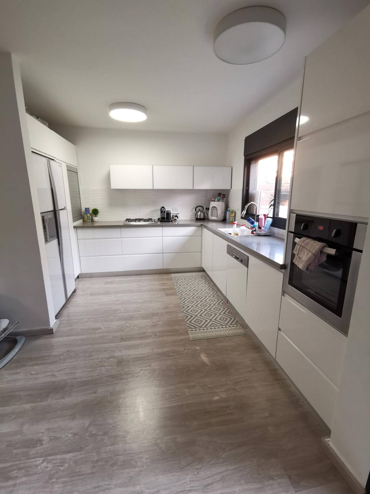
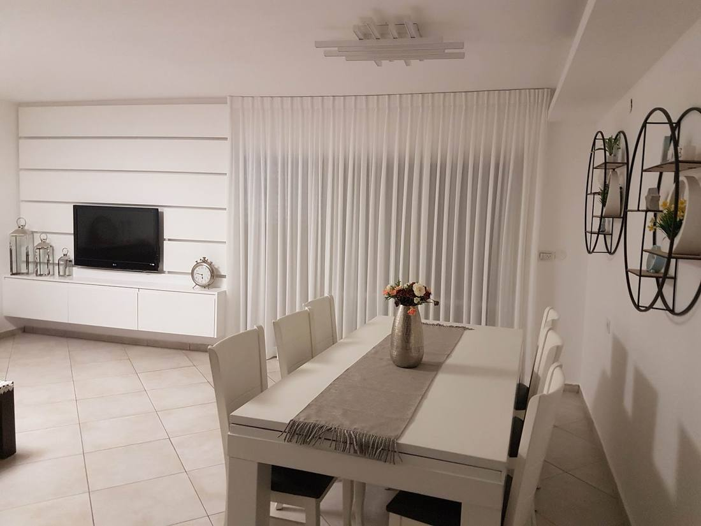

נישות מוארותLit niches
פס לד בתוך קיר הארונות.An LED strip inside the wall of units.
קונספט לדוגמה שנבנה עבור שלומי מטבחי יוקרה · זה אינו האתר הרשמי של העסקA sample concept built for Shlomi Luxury Kitchens · This is not the business’s official website


השרטוטThe drawingמטבחים, ארונות אמבטיה, חדרי כביסה ונגרות לכל הבית. מהשרטוט ועד הידית האחרונה, בקריית אתא.Kitchens, bathroom cabinets, laundry rooms and carpentry for the whole home. From the drawing to the last handle, in Kiryat Ata.






הפרטים שחוזרים בעבודות של שלומי, מקרוב.The details that recur in Shlomi’s work, up close.
פס לד בתוך קיר הארונות.An LED strip inside the wall of units.
פסים אופקיים וארון תלוי מתחת.Horizontal panels with a floating unit below.
שלוש בחירות, והודעה מוכנה לשלומי בוואטסאפ.Three choices, and a message ready for Shlomi on WhatsApp.
מתוך 94 ביקורות. חמש מהן, כלשונן:From 94 reviews. Five of them, word for word:
שלומי והצוות שלו אדיבים, מקצועיים והוגנים. הם חידשו לנו את המטבח בצורה מדהימה – לא זיהינו אותו. השירות היה מעולה, עם הרבה סבלנות וירידה לפרטים הקטנים.
Shlomi and his team are courteous, professional and fair. They renewed our kitchen amazingly – we didn’t recognise it. The service was excellent, with a lot of patience and attention to the small details.
שלומי עשה עבודה מדהימה אצלי בבית, עם סטנדרטים גבוהים מאוד, לא מוותר על כל דלת, או פינה… עשינו נגרות כמעט בכל פינה בבית, יודע למצות את הפוטנציאל, ובמיוחד להתמודד עם כל אתגר שבא בדרך (כמו קירות לא ישרים).
Shlomi did amazing work in my home, to very high standards, not giving up on a single door or corner… We did carpentry in almost every corner of the house; he knows how to get the most out of a space, and above all how to handle every challenge along the way (like walls that aren’t straight).
שלומי עשה לנו ארונות אמבטיה וחדר כביסה. עבודה יפה, נקייה ומדוייקת. שלומי היה מקסים, נתן שירות מקצועי, היה קשוב לכל הבקשות שלנו ותמיד היה זמין לכל שאלה. ממליצים בחום!!
Shlomi made our bathroom cabinets and laundry room. Beautiful, clean and precise work. Shlomi was lovely, gave professional service, listened to all our requests and was always available for any question. Warmly recommended!
חיפשנו נגר עם רגש, שמבין אותנו, ושמדבר בשפה שלנו… ומצאנו את שלומי. איש עם לב ענק… והפרוייקט איתו היה ענק ולקח יותר משנה. והוא לא איכזב… נשמה טהורה וידיים של זהב.
We were looking for a carpenter with heart, who understands us and speaks our language… and we found Shlomi. A man with a huge heart… The project with him was huge and took more than a year. And he didn’t disappoint… A pure soul and hands of gold.
שלומי עשה לנו מטבח ייחודי ויפה מאוד. הוא מקצוען קואופרטיבי ואמין. אנחנו מרוצים מאוד וממליצים עליו מאוד.
Shlomi made us a unique and very beautiful kitchen. He’s a cooperative, reliable professional. We’re very happy and highly recommend him.

מטבחים, ארונות אמבטיה, חדרי כביסה, קירות טלוויזיה, ארונות קיר ונגרות לכל הבית, כמו שרואים בתמונות ובביקורות.Kitchens, bathroom cabinets, laundry rooms, TV walls, wardrobes and carpentry for the whole home, as the photos and reviews show.
כן. חידוש מטבחים הוא חלק מהעבודה, כמו שכתוב גם בביקורות.Yes. Renewing kitchens is part of the work, as the reviews also say.
ברחוב שלמה בן יוסף 5, קריית אתא.At 5 Shlomo Ben Yosef St, Kiryat Ata.
א׳–ה׳ 7:30–17:00, ו׳ 7:30–13:00, שבת סגור.Sun–Thu 7:30–17:00, Fri 7:30–13:00, closed Saturday.